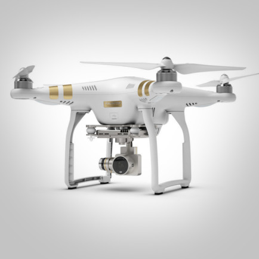
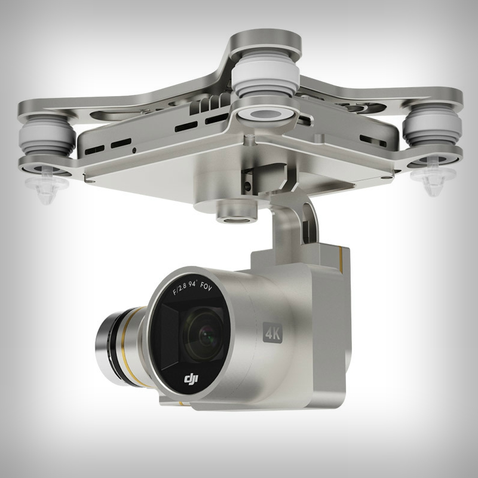
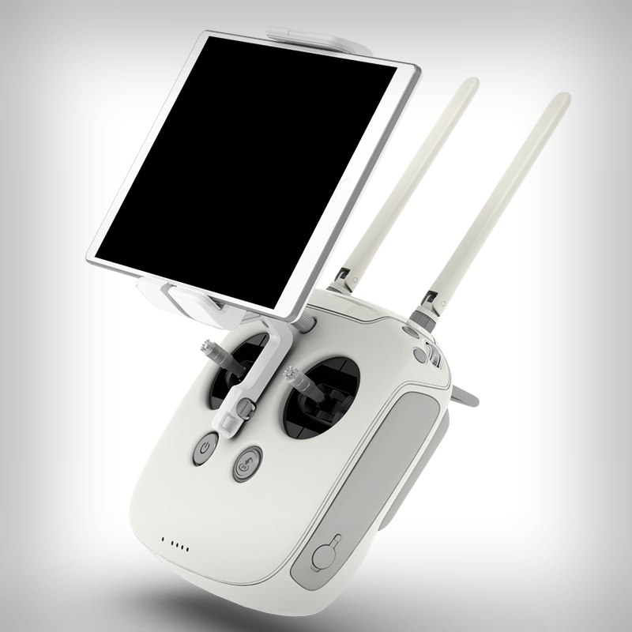
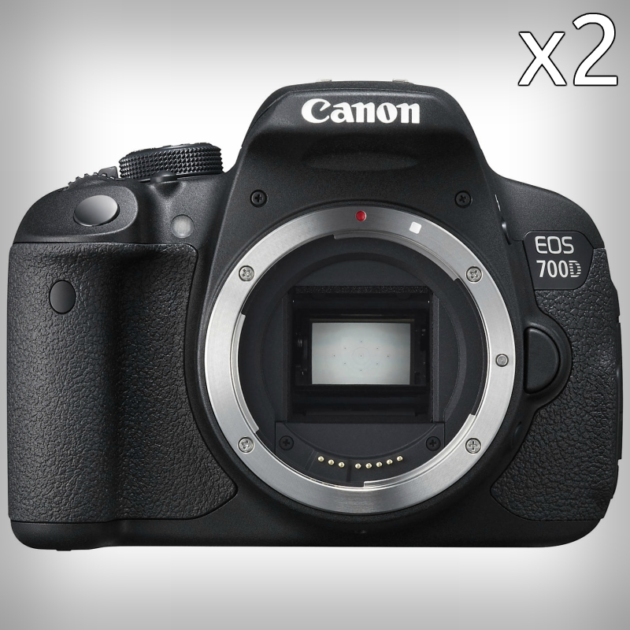
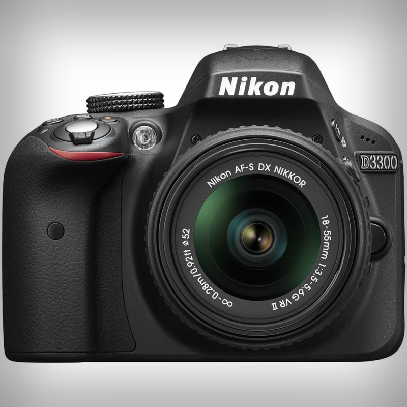

O nás
Jsme studenti, kteří se ve volném čase na plný úvazek věnují filmu a v poslední době pak vzdušné kinematografii.
Film je naší vášní, naším životem. Tomu také odpovídá náš přístup, který je profesionální a průkopnický. Ničeho se
nezaleknem a máme velký osobní zájem aby naše (nebo Vaše) videa a fotografie byly krásné.
Náš team
Oba studujeme Gymnásium Jana Keplera, oba nás zajímá technika, oba směřujem na FAMU. Ve škole jsme známí jako ti, co všechno spraví, cokoliv zařídí a hlavně točí. Jony začal točit už v dětství, má
mnoho zkušeností se střihem a barvením a aktivně se zapojuje do velkých natáčení, kde asistuje všemu možnému, aby nabral co nejvíce zkušeností. Vyzná se v mhoha kamerách a vybavení. Jirka začal točit na YouTube již před čtyřmi lety, perfektně se vyzná v technice a střihu. V současné době profesionálně fotí. Má mnoho zkušeností s různýmy střihovými programy a pluginy.
Dopředu nás žene potřeba se neustále zlepšovat a být co nejlepší. Filmem často trávíme až moc času, ale věříme, že se nám jednou vše vrátí.

- Dron DJI Phantom 3 Professional
- Maximální rychlost 60 km/h
- Maximální dostup 6000m
- GPS/GLONASS fail-safe system

- 4K video a 12mp foto
- Optika f/2.8 20mm
- Iso 100-3200, 8s-1/8000s
- 3-osý elektronický gimbal

- Maximální dolet 5km
- HD přímý přenos
- Display Nvidia Shield K1

- 2x Canon EOS 700D
- 18 Mpix CMOS, FullHD video
- 2x 18-55, STM motor, optická stabilizace

- Nikon D3300
- 24.2 Mpix CMOS, FullHD/60p video
- 18-105, SWM motor, optická stabilizace